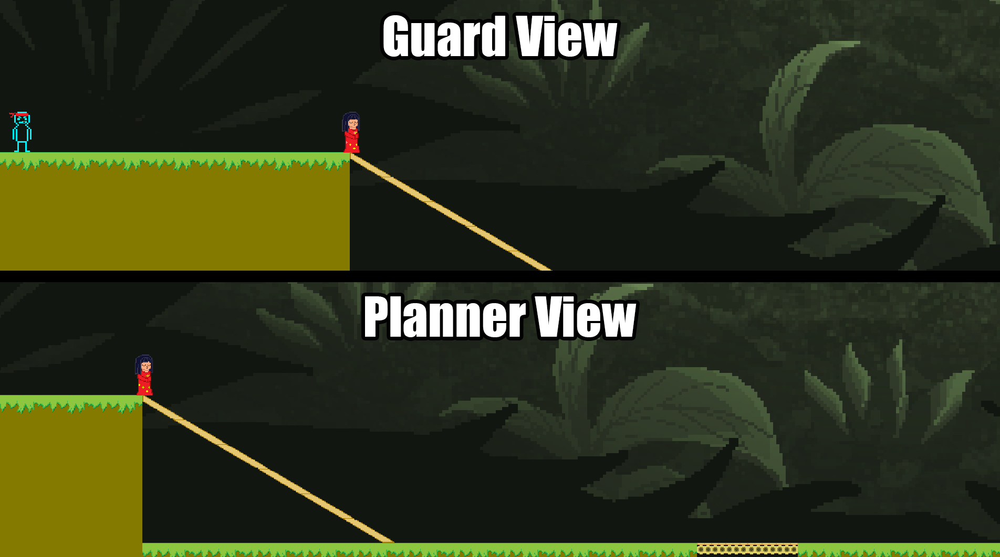
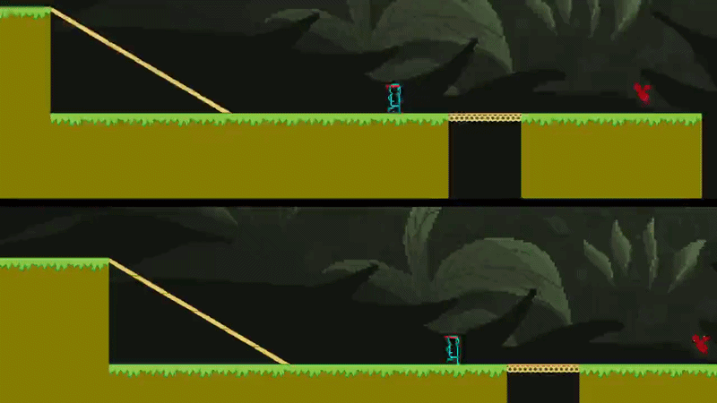
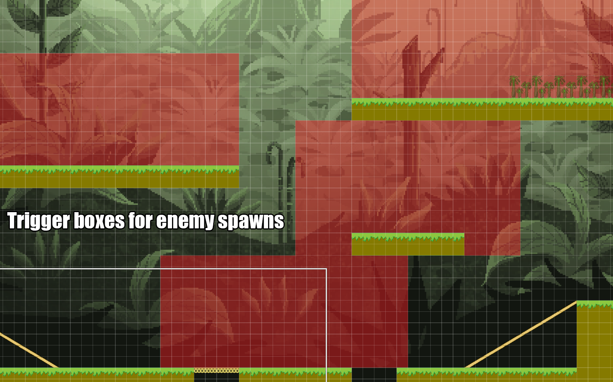

The Guard
Navigates the level and eliminates threats to protect the NPC.
CASE STUDY · SYSTEMS DESIGN & PROGRAMMING
An asymmetric two-player platformer where one player protects an NPC while the other manipulates the environment to guide it safely toward the goal.
My roles: Programmer & Game Designer
This prototype was created over two days as an exercise in rapid game prototyping. I handled the programming, while my teammate created the art. We shared the design responsibilities.
Our goal was to create a cooperative platformer where two players must work together to escort an autonomous NPC safely through a level. We wanted neither player to be able to complete the objective alone.

Both players had to use different input devices. We chose to separate the controls between a keyboard and a mouse, then design distinct gameplay responsibilities around those inputs.
Navigates the level and eliminates threats to protect the NPC.
Manipulates the environment to create safe paths and help guide the NPC toward the goal.
To create cooperation around the input-device constraint, we designed two roles with different ways of interacting with the game. The Guard focuses on movement and protection, while the Planner creates safe paths for the NPC.
The Guard directly controls a character in the level, navigating obstacles and protecting the NPC from approaching threats.


The Guard can move, jump and wall jump, with limited air control and coyote time to make platforming more forgiving.
Activating a shield briefly eliminates threats on contact. A short cooldown discourages repeated attacks and encourages more deliberate timing.
Rather than directly controlling a character, the Planner interacts with the environment to create paths that help the NPC progress.


The Planner can click and hold to pan their view, allowing them to inspect different parts of the level.
By dragging paths into highlighted positions, the Planner creates routes for the NPC. This makes their decisions important to when the team can advance.
Our intention was to make both roles necessary. The Guard could remove threats but not create new paths, while the Planner could manipulate the environment but not directly eliminate enemies. Progress required coordination between both players.
The NPC's automatic movement creates a shared timing challenge. The Planner must prepare a safe route, while the Guard needs to manage threats that could interrupt the NPC's progress.
The NPC continues moving in its current direction until it reaches a wall, at which point it turns around.
This predictable behavior allows both players to anticipate its movement, but also creates pressure to prepare routes and handle threats.
When the NPC enters designated trigger areas, enemies spawn in predefined patterns. Each trigger can activate only once.
This was intended to introduce encounters as the NPC progresses while allowing players to retreat without repeatedly triggering the same enemy wave.

If the NPC collides with an enemy or falls into a pit, the game ends.
Both players win when the NPC reaches the goal at the end of the level.
I wanted the NPC to create a shared sense of urgency. The Planner and Guard have different responsibilities, but their decisions affect the same objective, encouraging communication and coordination.
Developing the prototype in GameMaker required us to support two different control schemes and separate player perspectives on a single monitor.
I implemented two viewports showing the same game world with separate player controls. We chose a horizontal split to provide better visibility of upcoming platforming challenges than a vertical arrangement.
To visually separate the perspectives, I positioned the viewports apart rather than placing them directly against each other. The empty space between them created a black divider.
The divider made the two perspectives easier to distinguish, but introduced an unintended problem for the Planner.
Because the divider was created using empty game space, moving the mouse into that region could interfere with the Planner's interactions.
I would investigate keeping the viewports adjacent and drawing a visual divider over them instead. This would separate their appearance without requiring an empty region between the views.
Implementing movement across sloped terrain presented an additional challenge. The behavior we needed required custom programming rather than relying on GameMaker's default movement handling.
Working within a two-day timeframe encouraged us to build around a simple cooperative objective and explore how our input-device constraint could influence the game's design.
Separating the controls between a keyboard and mouse encouraged us to give each player a different responsibility rather than duplicating the same abilities.
This reinforced the importance of considering how individual mechanics contribute to a shared gameplay goal.
The split-screen divider showed how a solution that works visually can create unexpected interaction problems.
It highlighted the importance of considering mouse interaction and player input when designing shared-screen interfaces.
With more development time, I would focus on testing how well players understand their responsibilities and coordinate their actions.
I would also revisit the split-screen divider and refine the movement system, particularly how the Guard handles sloped terrain.
Interested in more of my design work?
Explore More Projects